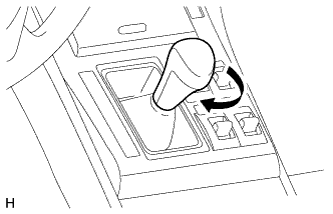

AIR CONDITIONING PANEL > INSTALLATION |
| 1. INSTALL DISPLAY AND NAVIGATION MODULE DISPLAY (w/ Navigation System) |
Connect the connectors.
 |
Insert the display and navigation module display and attach the 7 clips on the backside of the display and navigation module display.
Install the display and navigation module display with the 4 bolts.
| 2. INSTALL AIR CONDITIONING CONTROL ASSEMBLY (w/o Navigation System) |
Connect the connectors.
Attach the 7 clips and install the air conditioning control assembly.
Install the 2 bolts.
| 3. INSTALL RADIO RECEIVER ASSEMBLY WITH BRACKET |
w/o Navigation System:
Connect the connectors.
 |
Insert the radio receiver to attach the 6 clips and rib on its backside.
Install the radio receiver with the 4 bolts.
w/ Navigation System:
Connect the connectors.
 |
Insert the radio receiver to attach the 6 clips and 3 ribs on its backside.
Install the radio receiver with the 4 bolts.
| 4. INSTALL FRONT UPPER CONSOLE PANEL GARNISH |
Attach the 2 clips to install the front upper console panel garnish.
| 5. INSTALL UPPER CONSOLE PANEL SUB-ASSEMBLY |
Connect each connector.
Attach the 7 clips to install the upper console panel.
| 6. INSTALL SHIFT LEVER KNOB SUB-ASSEMBLY |
|  |
Install the shift lever knob and twist it in the direction indicated by the arrow.
| 7. INSTALL NO. 2 INSTRUMENT PANEL REGISTER ASSEMBLY |
Attach the 8 clips to install the No. 2 instrument panel register.
| 8. INSTALL CENTER INSTRUMENT CLUSTER FINISH PANEL GARNISH |
 |
Attach the 13 clips to install the center instrument cluster finish panel garnish together with the instrument cluster finish panel garnish.
| *1 | Center Instrument Cluster Finish Panel Garnish |
| *2 | Instrument Cluster Finish Panel Garnish |
| 9. INSTALL NO. 1 INSTRUMENT PANEL FINISH CUSHION |
Connect the connector.
Attach the 4 clips to install the No. 1 instrument panel finish cushion.